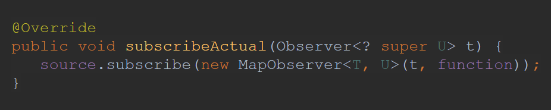
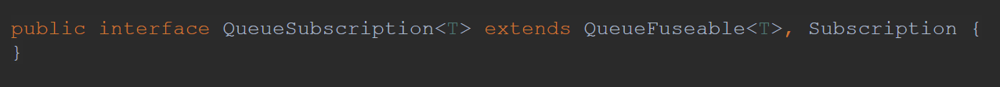

Operator fusion in RxJava 2
Source: https://github.com/ReactiveX
Introduction⌗
RxJava is a very powerful library, though it has some issues as well. Specifically performance and memory issues, which come from problems library tries to solve and how the solution is designed from technical perspective. In order to minimize overhead in RxJava there are a number of optimizations, which are called “operator fusion”. And we’ll talk about them in this article. But first let’s recap how RxJava reactive types work and what issues they have.
Observable⌗
When working with Observable there are three major pieces: Observable, Observer and Disposable. We all know Observable and how it is created (e.g. Observable.just(“Hello, World!")). Observable is a building block of each Rx-chain. To make Observable work, we need to subscribe to it with passing Observer to the subscribe(…) method. Observer is basically an interface with callbacks onSubscribe, onNext, onError and onComplete. When we subscribe to Observable with some Observer, Observable creates Disposable object and passes it to Observer (so Observer can later dispose Rx-chain if needed) via onSubscribe callback. After that is done — communication is established and Observable can emit some values via onNext without any additional waiting. Therefore Observable doesn’t support backpressure — there is no way for Observer to notify Observable that it should wait and not emit more values.
Flowable⌗
With Flowable everything is similar, but instead of Observer and Disposable we have Subscriber and Subscription. Subscription has additional request(n) method, using which Subscriber can explicitly request Flowable to emit requested amount of items. Without requesting values Flowable won’t emit anything, that is why Flowable supports backpressure.
Assembly and subscribe⌗
When working with RxJava reactive types there are two important stages: assembly and subscribe. On assembly Rx-chain is built, on subscribe — we “start” Rx-chain.
Consider following example:
In this case we go from top to bottom and the following happens:
-
ObservableJust object is created
-
ObservableMap object is created and previously created ObservableJust is passed into new Observable (so they are assembled together)
-
ObservableFilter object is created and previously created ObservableMap (with ObservableJust inside) is passed into new Observable
-
We subscribe to the ObservableFilter, which triggers actual subscription
-
ObservableFilter creates its own internal observer and subscribes to ObservableMap with it
-
ObservableMap creates its own internal observer and subscribes to ObservableJust
-
ObservableJust sends onSubscribe event downstream (other Observables also send this event to their downstream down to the latest Observable in chain)
-
ObservableJust starts emitting values and they are passed downstream via onNext callbacks
So you can see that quite a lot of things happen with this short Rx-chain. If this chain was of type Flowable then additional communication with request(n) would also take place making this even more complicated.
Queues and synchronization⌗
Operators under the hood might have their internal Queues for processing events. Access to this queue should be serialized (that means that it should be accessed with proper synchronization). RxJava2 has non-blocking synchronization based on Atomics (e.g. AtomicInteger) and infinite loops with compareAndSet method (for better performance). So inside the library it is common to see some code like this:
Queue in an operator along with Atomic objects also provides an overhead if we consider that each operator in a chain can have its own Queue.
Issues⌗
So considering all the above, issues which RxJava has are:
-
Assembly time overhead — to create Rx-chain it is required to create quite a lot of objects, which comes with a memory overhead
-
Subscribe time overhead — when we subscribe to Rx-chain quite a lot of communication happen, which comes with a performance overhead
-
Allocations and serialization overhead — creating internal structures as queues and atomic objects for each operator comes as a memory and performance overhead
Operator fusion⌗
To resolve some of the performance and memory issues there is “operator fusion”.
There are two types of fusion:
-
Macro fusion — minimizing number of objects created during assembly or subscribe by merging some operators together into one
-
Micro fusion — removing unnecessary synchronization and sharing internal structures (such as queues) between operators
Macro fusion on Assembly⌗
On Assembly⌗
Macro fusion on assembly is focused on minimizing number of Observables and objects created during assembly. When we talk about “assembly” we mean this place:
Basic on Assembly fusion⌗
The simplest way to optimize some Observables is to add checks for special cases, so that created Observables are simpler in terms of implementation than general one. As an example we can look at Observable.fromArray, which can downgrade to Observable.empty or Observable.just if there are 0 or 1 items provided respectively:
ScalarCallable⌗
First “advanced” optimization from fuseable package we’ll look onto is ScalarCallable interface:
It is basically that same interface as common java Callable with the difference that it doesn’t throw exceptions. ScallarCallable is an interface which reactive type can implement to say that it holds constant value which can be safely extracted during assembly time. Specifically such reactive type can either contain exactly one item or no items at all. Therefore when we call call method — we check returned value: if it is null — then reactive type doesn’t have any value, if it returned non-null value — then it has only that value. Based on the described contract only empty and just operators on Observable, Flowable and Maybe can be marked with this interface.
Then for example in xMap operators (flatMap, switchMap, concatMap) we can apply the optimization if source is marked with this interface:
In case source is marked with ScalarCallable interface we can switch to simplified version of xMap instead of full implementation (which is quite heavy).
FuseToXXX⌗
In the fuseable package there are three interfaces:
Let’s take a closer look at FuseToObservable, for other interfaces everything will be similar.
Consider we have the following Rx-chain:
Here we create some range and want to count number of emitted items. count operator returns Single, but we would like to have an Observable (for example we want to merge this result with some other Observables). Then we add additional toObservable operator to our Rx-chain making it more complex and heavy.
FuseToObservable comes with a help here. What this interface does is saying that some operators which return reactive type other than Observable under the hood have some implementation which returns Observable, and that implementation can be extracted inside toObservable call.
Considering our example with count:
By default it returns ObservableCountSingle, but if we look into implementation of that operator we’ll see that it implements FuseToObservable interface and can provide different implementation when called in fused mode:
And when we call toObservable that implementation will be extracted which effectively means that toObservable Observable won’t be created:
Macro fusion on subscribe⌗
Macro fusion on subscribe is focused on the same type of optimizations which are done on assembly, but they are done inside subscribeActual method:

Sometimes it is just not possible to apply optimization during assembly, because data is unknown before subscription, sometimes it is just more convenient to do some optimization on subscribe rather than on assembly.
Basic on subscribe fusion⌗
Same as with assembly there is simple optimization which checks for some special conditions to use simplified implementation instead of general one. For example Observable.amb checks number of sources provided to decide whether heavy AmbCoordinator should be instantiated or not:
Callable⌗
During on assembly we have some optimization with ScalarCallable interface. For subscribe time we have similar optimizations with Callable interface.
NOTE: as ScalarCallable extends Callable — any optimization which can be applied during assembly on ScalarCallable also can be applied to Callable on subscribe
For example in xMap operators during subscribe for Observables marked with Callable interface it is possible to switch to simplified implementation:
Micro fusion⌗
Micro fusion is aimed to minimize overhead by reducing some synchronization or sharing internal structures as queues.
ConditionalSubscriber⌗
Let’s look at the example of what happens when operator like Flowable.filter is used:
We have Upstream, our filter operator and the downstream. Let’s imagine that our filter function checks whether or not value is less than 5. After subscription is established downstream has to request some number of items from upstream:
-
Downstream requests 1 item from Filter
-
Filter requests 1 item from Upstream
-
Upstream produces item and passes it to Filter (let’s say it is number 1)
-
Filter checks that value satisfies predicate and passes it to downstream
-
Downstream accepts item and requests one more item from Filter
-
Filter requests 1 item from Upstream
-
Upstream produces item and passes it to Filter (let’s say it is number 10)
-
Filter checks that values doesn’t satisfy predicate and can’t be passed to downstream, though downstream requested one item and Filter didn’t provide it, therefore Filter requests one more item from Upstream
-
And this is repeated until streams are terminated
As you can see there is a lot of communication between operators, and more importantly each event comes in a serialized way which means that it implies some overhead.
Consider we have two Filter operators in between — communication can be increased significantly so as the overhead:
This is where ConditionalSubscriber comes to a rescue:
Usually onNext callback in Subscriber returns no value, as upstream just provides values via that callback and waits for new requests from downstream. ConditionalSubscriber has additional method tryOnNext which is similar to onNext with a difference that it immediately returns boolean on whether value was accepted or rejected. This can minimize number of required request(n) calls as upstream receives direct response.
If we look for example at the Flowable.filter implementation we can see that basically upstream filter can directly access predicate of downstream filter predicate:
And this can save us some request calls:
But it would not be that awesome if this optimization aimed to make less overhead with chained filter operators (as it seems anyway can be written inside one filter operator). The good thing is that Flowable.map also implements ConditionalSubscriber, which makes less overhead when have multiple filter and map operators chained together:
Queue fuseable⌗
The most complicated micro fusion is based on sharing internal queues between operators. The whole optimization is based on the QueueSubscription interface

It is basically just Queue and Subscription under one interface. But Queue interface is not just simple interface from Java, instead it has additional method requestFusion in it:
The idea is that comparing with usual communication between Flowable and Subscriber via onXXX callbacks, upstream can provide not just Subscription, but QueueSubscription allowing downstream to directly access internal queue.
The mechanics is as following. First of all during onSubscribe upstream and downstream should agree on the fusion and select fusion mode in which they will work. If they agree on the fusion — then new communication implementation will be used, if they don’t — traditional communication via onXXX callbacks will be established.
Generally after fusion is established downstream will get items directly by calling poll() method on the upstream queue:
There are three fusion modes:
-
NONE — that means no fusion
-
SYNC — fusion will happen synchronously
-
ASYNC — fusion will happen asynchronously
ANY — is just SYNC or ASYNC (what exactly will be established is based on what mode upstream supports).
SYNC fusion⌗
SYNC fusion is available only when upstream values are either already statically available or are generated when poll() is called synchronously.
If upstream and downstream agree to use sync fusion mode, this will lead to the following contract:
-
Downstream will directly call poll() method when needed
-
poll() method can throw an exception — that would be equivalent to onError
-
poll() method can return null — that would be equivalent to onComplete
-
poll() method can return non-null value — that would be equivalent to onNext
-
Upstream won’t call any of onXXX callbacks
Example of operator which supports SYNC fusion mode is Flowable.range:
ASYNC fusion⌗
ASYNC fusion mode is available when upstream values may become available to poll() eventually.
If upstream and downstream agree to use async fusion mode, this will lead to the following contract:
-
Upstream signals onError and onComplete as usual
-
onNext may not actually contain the upstream value but have null instead Downstream should treat such onNext as indication that poll() can be called
-
Callers of poll() should catch exceptions
Yes, it is possible to have null value in onNext in RxJava
Example of operator which supports ASYNC fusion mode is Flowable.filter:
We’ve looked at some examples of operators which support fusion modes, but to enable this mode one should request fusion first. For example fusion mode is requested inside Flowable.flatMap for InnerSubscriber:
Here you see that during on subscribe, when source implements QueueSubscription fusion mode ANY is requested. And depending on what mode was accepted by source different strategies are applied.
QueueSubscription threading⌗
With queue fusion it is important to pay attention to threading issue. If we allow downstream to access upstream’s queue it may lead to an issue if upstream and downstream are working on different threads:
It might happen that inside map we have some heavy computation, which (in case of direct polling) may leak that computation to a different thread. To resolve this issue there is additional marker option BOUNDARY, which says that caller of the poll method might do that on a different thread. Then operators should either ignore BOUNDARY option and allow accessing its queue from another thread or decline fusion in case BOUNDARY option is requested.
If we look at the Observable.map implementation we can see that it uses transitiveBoundaryFusion helper function:
Which inside states that BOUNDARY mode is not allowed:
Conclusion⌗
In this article we had an overview of some optimizations in RxJava and found some interesting things:
-
Observable in RxJava 2 doesn’t support backpressure (as it has no way to notify upstream to not provide more items)
-
Null values are not allowed in RxJava because some optimizations underneath are based on passing null values in callbacks
-
hide() operator is very important if one wants to turn all optimizations off
-
Operator fusion is fancy, though it is still just a number of optimizations. And they are not applied everywhere for all operators. One can be surprised that in some cases where it sounds like it could be optimized — none of the optimizations work actually. The reason is that these optimizations are applied to some critical places and common solutions, and making general optimizations is very difficult.
So, don’t think that under the hood RxJava does everything effectively and now you can write long Rx-chains. Benchmark your code, profile important chains and try to find out how to optimize each separately.
Further reading: Operator-fusion (Part 1) *Operator-fusion, one of the cutting-edge research topics in the reactive programming world, is the aim to have two of…*akarnokd.blogspot.com Operator fusion (part 2 - final) *In the previous part, I’ve introduced the concepts around operator fusion. In this post, I’ll detail the API and…*akarnokd.blogspot.com
Happy coding